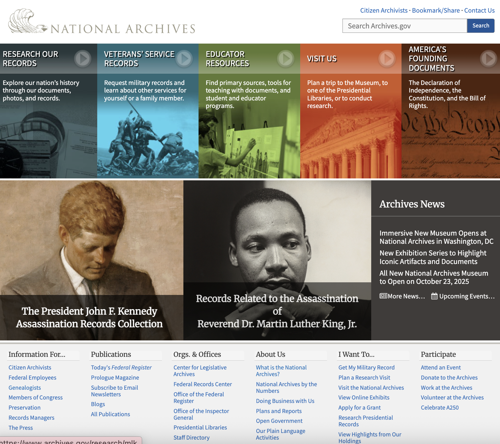
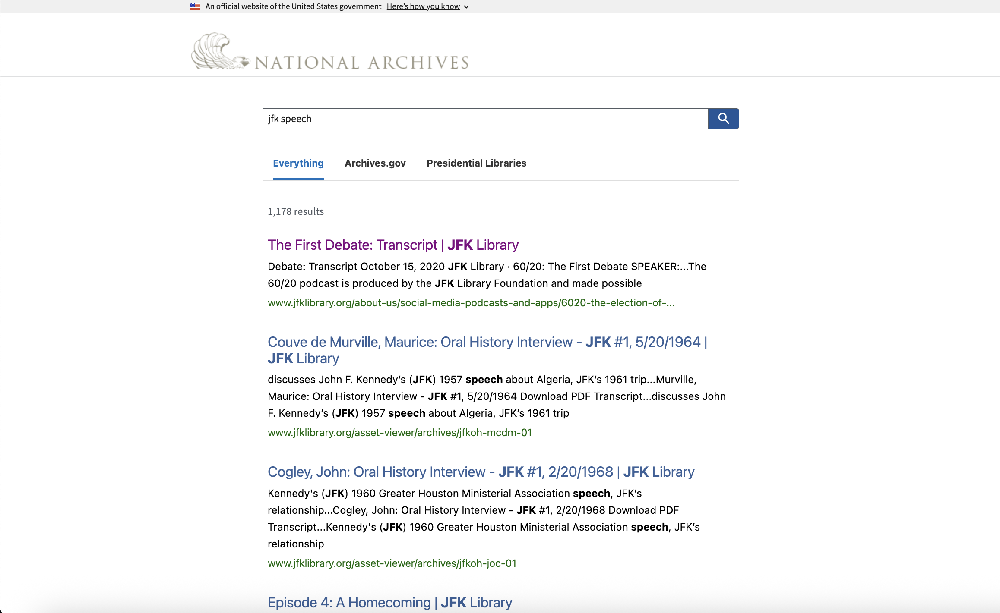

Group 3 Final
Calvin Marcus Barron, Lara Loutfi, Kat Reyes, Emily Seaton
LSC 555 Intro to Information Systems
December 7, 2025
National Archives Evaluation
This project evaluates the usability, navigation, and overall design of the National Archives and Records Administration (NARA) online platforms.
Introduction
The National Archives and Records Administration (NARA) is responsible for preserving and providing access to the permanent records of the U.S. federal government. Its mission is to "preserve, protect, and share the historical records of the United States to promote public inquiry and strengthen democratic participation." As federal agencies began producing large volumes of electronic records in the mid-twentieth century, NARA expanded its digital stewardship efforts and accessioned its first electronic records in the 1970s. Its current web platforms reflect this continued shift toward digital access and public engagement.
The primary website, Archives.gov, serves as a public-facing information portal. From the homepage, users are directed toward major service areas such as "Research Our Records," "Veterans' Service Records," "Educator Resources," "Visit Us," and "America's Founding Documents." These entry points suggest a centralized system, yet the site actually distributes its functions across multiple interfaces.
In addition to the informational website, NARA maintains a separate platform for archival discovery: the National Archives Catalog. This catalog provides access to archival descriptions, digitized materials, and advanced search tools not available through the homepage search. However, the Catalog exists on a separate domain with a different design and navigation structure, which can complicate the user's understanding of how NARA's systems relate to one another.
This evaluation examines how these interconnected platforms operate, how users move between them, and where inconsistencies in design, navigation, and search behavior create barriers to effective use. Through a combined review of homepage behavior, internal section navigation, and catalog functionality, this project assesses the strengths and limitations of NARA's current digital environment and identifies opportunities for improvement.
Search Trial: Homepage Search vs. Catalog Search
One of the most significant usability problems on Archives.gov is that the homepage interface gives the appearance of a unified system, even though the website and the Catalog function entirely separately. This becomes especially confusing with the homepage search bar and the navigation tiles, which look like tools for accessing archival records but do not behave that way.
Homepage Navigation

To test how users move between Archives.gov and the National Archives Catalog, a controlled search trial was conducted using the term "JFK Speech." The goal was to compare how the homepage search engine behaves versus the Catalog search engine, and to determine whether users are clearly guided toward archival results.
Homepage Search Results
Entering "JFK Speech" into the homepage search bar returned only website content, including press releases, blog entries, transcripts hosted on presidential library pages, and general informational articles. The search bar itself is labeled "Search Archives.gov," which appears authoritative but is actually vague, especially for new users, who may reasonably assume this means they are searching the National Archives' collections. In reality, the search is restricted to the public-facing website.

No archival records appeared in the homepage results, and the page did not inform the user that the search was limited to website content only. Because the interface does not explain this limitation, users may believe they have performed a comprehensive search when archival materials were excluded entirely. The experience gives an impression of system completeness that the search function does not actually provide.
Catalog Search Results
Performing the same search in the National Archives Catalog returned actual archival entries, including digitized documents, record group designations, finding aids, and metadata-rich items related to JFK speeches. The Catalog search behaved as expected for a research tool, providing filters, item-level metadata, and clear access points to digital files when available.
Comparison
- Homepage search returned only informational webpages.
- Catalog search returned archival materials, descriptions, and digitized assets.
- No guidance appeared on the homepage suggesting users should switch to the Catalog for archival research.
- No reciprocal pathway was provided on the Catalog to return users to the main website.
This trial highlights the fundamental disconnect between NARA’s two search systems. Users may believe they have searched the entire archive when using the homepage search, when in fact they have only retrieved website content. Without clear labeling or guidance, the risk of incomplete research is high, especially for novice or first-time users.
Evaluation
The National Archives website provides essential access to information and services, but its design and navigation create an uneven experience. The homepage uses clear language and visually distinct entry points, yet the search bar only retrieves website content and not archival records, which can mislead users. Navigation within the site is also inconsistent. Internal section pages remove the permanent labels seen on the homepage and rely on slow-loading hover descriptions without dropdown menus, making it harder for users to understand the site's structure at a glance. Archives.gov and the Catalog also function as two separate systems, with the Catalog using a different layout and offering no direct return path to the main site. Together, these three distinct navigation experiences affect how easily users can move through the site and access the tools they need.
Nielsen’s Usability Heuristics
-
Visibility of System Status: The website is very responsive, so pages load quickly and there is rarely a need for loading indicators. The site also clearly communicates closures or disruptions, such as government shutdowns or holiday closures, through noticeable banners. However, users are not informed that the homepage search only returns website content, which means they may not realize when their search results are incomplete.
-
Match Between the System and the Real World: The website consistently uses plain English that is easy for general users to understand. Labels such as "Research Our Records," "Veterans' Service Records," and "Educator Resources" are spelled out and avoid acronyms or technical jargon. This helps users understand where to go without having prior archival knowledge.
-
User Control and Freedom: Users can return to the Archives.gov homepage by clicking the site name, and breadcrumb paths allow them to move back to parent pages. A "back to top" arrow also helps users navigate long pages. However, once users enter the Catalog, hosted on a separate domain, the navigation behavior changes entirely. The Catalog does not provide a direct route back to the main Archives.gov site; clicking its logo only returns users to the Catalog's own homepage, forcing reliance on the browser's back button or manually reentering the main site. This disrupts the flow between the two systems. On Archives.gov internal pages, the permanent text descriptors visible on the homepage become slow-loading hover descriptions, and there are no dropdown menus to reveal subcategories. Without always-visible labels or expandable menus, users cannot quickly scan or jump between sections, which reduces their sense of control and makes the site harder to navigate efficiently.
-
Consistency and Standards: The website's consistency changes depending on where users are. The Archives.gov homepage uses large navigation tiles with permanent text descriptors, but their labels disappear on internal pages and become slow-loading hover descriptions. Internal pages also rely on a horizontal navigation bar without dropdown menus, which makes the structure less transparent. The Catalog introduces an even more dramatic shift, with a different logo, layout, and overall interface that operates independently from the main site. The differences between homepage, internal pages, and the Catalog create three distinct experiences instead of a unified platform. Because design patterns, navigation cues, and interaction behaviors change so noticeably across these sections, users may feel disoriented or unsure of how systems relate, breaking expectations for institutional consistency and common web conventions.
-
Error Prevention: The homepage search bar is not clearly labeled as searching only website content, which can easily lead users to believe they are searching the entire archives. Because the search scope is not disclosed, the interface creates a predictable user error rather than preventing it, and no information is provided to help users avoid this confusion.
-
Recognition Rather than Recall: Large buttons and a visible structure on the homepage help users to recognize where to go. However, finding the catalog requires remembering the pathway ("Research Our Records" → "Search the Catalog"), which relies on recall. Internal pages also remove the permanent text descriptors visible on the homepage and replace them with slow-loading hover-only descriptions, increasing the user's reliance on memory rather than recognition.
-
Flexibility and Efficiency of Use: The Catalog includes filters, metadata, digitized pages, and sorting tools that support deeper research. The homepage lacks advanced options and has limited filtering, reducing efficiency for experienced users.
-
Aesthetic and Minimalist Design: The homepage feels cluttered with quick links and a large site map, both of which visually overwhelm the page compared to the cleaner layout of the Catalog. The Catalog page is simpler and more focused, creating a noticeable contrast between the two systems.
-
Help Users Recognize, Diagnose, and Recover from Errors: When users get unexpected homepage search results, the site does not explain that the search only covers website pages. There is no prompt suggesting the Catalog, making it hard for users to understand why their results are not archival.
-
Help and Documentation: The Catalog's "Help" link opens a long "Using the National Archives Catalog" page in the main NARA Help/FAQ section rather than inside the catalog interface itself. This guide is detailed and includes diagrams, step-by-step instructions, and screenshots for tasks like refining searches or downloading files. However, all the information appears on a single text-heavy page, and users must leave their search results to access it. There are no tooltips, inline prompts, or contextual help features within the catalog interface, so support exists but is not integrated into the actual research workflow.
Critical Analysis
The National Archives website provides essential access to government records, but the user experience varies greatly depending on which part of the system a person encounters. Archives.gov is designed as a public-facing information portal, while the Catalog functions as a separate research tool with a different layout, logo, and navigation structure. Users actually move through three distinct navigation patterns: the homepage, the internal section pages, and the Catalog. This creates friction because each area behaves differently even though users reasonably expect a unified user platform. The homepage offers clear categories and visually distinct entry points, but internal navigation lacks dropdown menus and relies on slow-loading hover descriptions that replace the permanent labels seen on the homepage. Meanwhile, the Catalog provides strong research features but offers no embedded guidance and no direct way to return to the main site. These differences shape the overall effectiveness of the site and reveal several strengths and weaknesses in usability, organization, and design.
Strengths
- The homepage provides clear, plainly worded entry points such as "Research Our Records," "Veterans' Service Records," and "Educator Resources," which help general users understand where to begin without needing archival experience.
- The homepage uses clearly visible navigation labels that remain on the screen at all times, helping users understand the site's major sections without relying on hover behavior.
- The Catalog includes strong research tools such as advanced filters, metadata, digitized images, sorting options, and extracted text, all of which support deep, scholarly research once users locate the Catalog.
- The website loads quickly and responds smoothly across most pages, reducing user frustration and improving efficiency.
- Banner announcements for closures or disruptions are displayed clearly, making it easy for users to stay informed.
Weaknesses
- The homepage search bar only searches the website itself and not the archival catalog, but this is never communicated to users, which leads to confusion and misleading search results.
- The Archives.gov navigation bar does not include dropdown menus, and the hover descriptions load slowly. Internal pages also remove the permanently visible descriptive text shown on the homepage, forcing users to hover to understand each section and making navigation less intuitive.
- The Catalog is hosted on a separate domain with a different logo and interface, so users must reorient themselves each time they move between the main site and the Catalog.
- There is no clear way to navigate from the Catalog back to the Archives.gov homepage, which disrupts the flow of research and forces users to rely on the browser's back button.
- The homepage is visually cluttered, with large navigation tiles and an oversized site map that dominates the page and makes it harder to quickly identify key functions.
- Help documentation for the Catalog is presented as one long, text-heavy FAQ page that users must leave the Catalog to read. There are no embedded instructions, tooltips, or contextual guidance within the Catalog interface itself.
- The homepage search filters ("Everything," "Archives.gov," and "Presidential Libraries") look like they refine results, but they only change which domain is searched. They do not filter by archival criteria, so users may think they are narrowing results when they are not.
Recommendations
- Clearly explain how the homepage search works, including that it only searches website content and that the filters ("Everything," "Archives.gov," and "Presidential Libraries") only change which website domain is searched. Redesign or remove these filters if they continue to resemble archival refinement tools and risk misleading users.
- Create a more unified relationship between Archives.gov and the Catalog by integrating their visual design and navigation structure. This should include consistent navigation elements across both platforms and a clear, prominent path for users to return to the main Archives.gov site from the Catalog.
- Introduce dropdown menus within the Archives.gov navigation bar so users can see the structure of each section without relying on slow hover descriptions or guesswork.
- Add small, embedded guidance within the Catalog, such as tooltips, short descriptions near filters, or a "help" icon next to the search bar, so users do not need to leave their search to read documentation.
- Although this evaluation focuses on the limitations of Archives.gov and the National Archives Catalog, these challenges are not unique to those two platforms. Other NARA-managed resources, such as the Office of the Federal Register, which publishes the Federal Register, Code of Federal Regulations, Public Papers of the Presidents, and the United States Statutes at Large, also operate on entirely separate websites not clearly linked from Archives.gov. Improving the integration and visibility of these related platforms would strengthen the overall user experience and support a more unified National Archives web ecosystem.
Conclusion
The National Archives website provides critical access to federal records, but the overall user experience is shaped by the disconnect between the homepage, the internal section pages, and the Catalog. Each area is functional on its own, yet their differing layouts, navigation patterns, and search behaviors make the platform feel divided rather than unified. The homepage relies on large visual tiles and an oversized site map, while the Catalog presents a cleaner, more streamlined interface designed for research. Making the descriptive text that appears under each navigation label on the homepage permanently visible on internal pages would create clearer structure and reduce the need for slow-loading hover descriptions. Additional improvements such as dropdown navigation, clearer distinctions between website search and catalog search, and stronger integration across the platform would create a more intuitive and cohesive experience. These changes would not only improve usability but also better support NARA's mission by making its digital resources easier for users to locate, navigate, and understand.
References
National Archives and Records Administration. (n.d.). Archives.gov. https://www.archives.gov/
National Archives and Records Administration. (n.d.). National Archives Catalog. https://catalog.archives.gov/
Nielsen, J. (2024, January 30). 10 Usability Heuristics for User Interface Design. Nielsen Norman Group. https://www.nngroup.com/articles/ten-usability-heuristics/